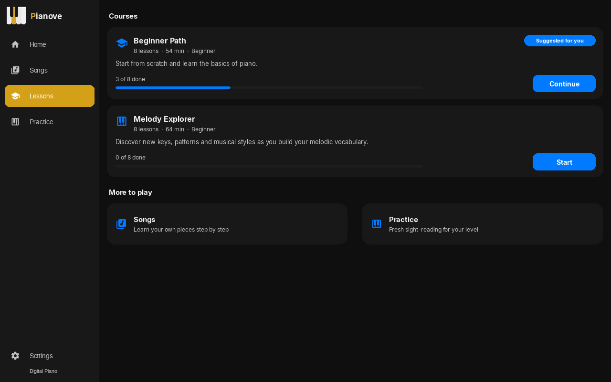
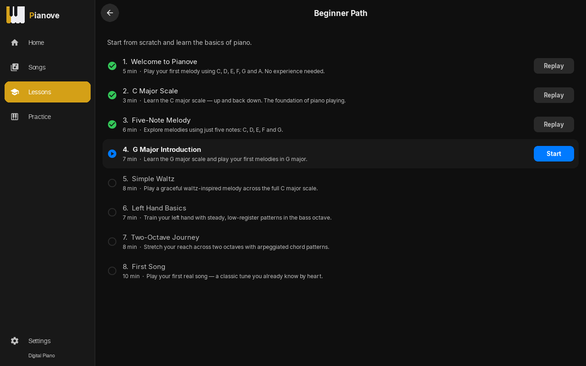

Playing
Lessons & Courses
Two built-in courses that explain an idea, show it with animated hands, and let you play it.
Courses
The Lessons tab lists the courses with their length and your progress; the one that fits your answer in the setup is marked Suggested for you. Open a course to see its lessons in order, each with what it teaches and how long it takes: finished lessons get a tick and can be replayed, the next one has a Start button.


| Course | Lessons |
|---|---|
| Beginner Path | Welcome to Pianove · C Major Scale · Five-Note Melody · G Major Introduction · Simple Waltz · Left Hand Basics · Two-Octave Journey · First Song |
| Melody Explorer | Natural Notes · Motif Building · Echo Phrases · D Major Scale · Pentatonic Groove · Folk Tune · Classical Theme · Final Melody |
Explaining: theory scenes
Every lesson begins with a short scene: a few screens, each with a sentence or two, the keyboard, often a staff, and animated hands that show how it is played. Some screens play a phrase and then wait for you to play it back; others ask you to find keys. Use Continue to move on, ‹ to go back and ↻ to watch a screen again.

Playing: the piece
Then you play from the staff (top right: Note 6 of 16). The piece is split into sections of a few bars:
- Practice: one section at a time. The music waits for the right key; the key is lit on the on-screen keyboard. Played notes turn green, wrong ones flash red.
- Final performance: after a count-in, the whole piece in tempo, with a moving cursor.
If too many notes go wrong in a row, Pianove steps back a section so you can consolidate it before moving on. The switches at the top hide or show the hands and the keys. In dark mode the staff is a dark sheet too, so long sessions are easier on the eyes.
Hands and fingering
Two animated hands sit below the keyboard and show which finger plays each note. The fingering is worked out automatically for every passage: Pianove tries every finger for every note and picks the most comfortable sequence, following the ergonomic rules piano teachers use (thumb passing under, black keys for long fingers, no unnecessary stretches). They are on by default; switch them off at the top of a lesson or in Settings → Lessons → Show Hands, where you can also pick their skin tone.

Languages
All lessons are written in English and German, and switch with the app language. Lessons you make yourself can have the same: see Creator Mode.